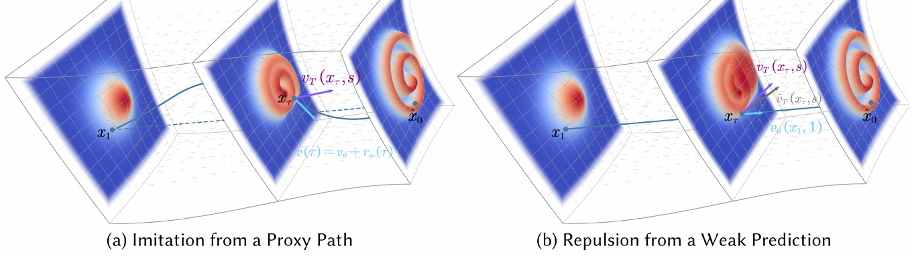

Picture a student who must cross a river in four long jumps while a guide watches. At random spots along each jump, the guide says "the current here pushes this way," and the student averages that into one jump. When the current swirls, a practice-only rope that may curve but is tied at both banks absorbs the swirl, and the student also learns where a careless guide would point, so they avoid it.
강을 네 번의 큰 점프로 건너야 하는 학생과 옆에서 지켜보는 안내인이 있다고 하자. 안내인은 점프마다 아무 지점에서나 "여기서는 물살이 이쪽으로 민다"고 알려 주고, 학생은 그걸 평균 내 점프 한 번에 담는다. 물살이 소용돌이칠 때는 양쪽 기슭에 묶여 있되 휘어질 수 있는 연습용 밧줄이 그 소용돌이를 받아 주고, 학생은 대충 보는 안내인이라면 가리킬 방향도 배워서 그쪽을 피한다.
How it works: regression on the student's own path작동 방식은 학생 자신의 경로 위에서 하는 회귀
Both refinements live only in training, so the 4-step sampler is untouched. The proxy path keeps the endpoints fixed, so it changes the supervision, not the update.
두 개선 장치는 학습에만 있어서 4단계 샘플러는 손대지 않는다. 보조 경로가 끝점을 고정하므로, 바뀌는 것은 감독 신호이지 업데이트 자체가 아니다.

- Roll out 4 coarse steps.큰 걸음 4번으로 롤아웃한다.The student predicts one velocity per step from its own current state, prompt-only, no target data.학생은 현재 자기 상태에서 걸음마다 속도 하나를 예측한다. 프롬프트만 쓰고 정답 데이터는 없다.
- Query the teacher mid-step.걸음 중간에서 교사에게 묻는다.At random points inside each step, the frozen teacher's velocity becomes an L2 target for the Pivot-adjusted path.걸음마다 아무 지점에서나 고정된 교사의 속도를 Pivot으로 보정한 경로의 L2 목표로 쓴다.
- Repel from the weak prediction.약한 예측은 밀어낸다.Subtract λ × the distance to the teacher's unconditional output (λ = 0.2 worked best); drop both at inference.교사의 무조건 출력과의 거리에 λ를 곱해 빼고(λ = 0.2가 가장 좋았다), 추론 때는 둘 다 뺀다.
Key point: 25× fewer network calls핵심은 네트워크 호출이 25배 적다는 것
The student uses 4 evaluations where the Wan2.1 teacher uses 100. Quality holds because the student learns the whole step, not every point inside it.
Wan2.1 교사가 100번 평가하는 일을 학생은 4번에 끝낸다. 걸음 안의 모든 지점이 아니라 걸음 전체를 배우기 때문에 화질이 유지된다.
Results: competitive video, livelier motion비디오에서 대등한 화질, 더 활발한 움직임
On Wan2.1-14B, SMD is within 0.06 of the top Quality and leads Dynamic Degree by 7.5 points, but trails AnyFlow on Semantic. Its edge is motion without an auxiliary model.
Wan2.1-14B에서 SMD는 Quality가 1위와 0.06 차이이고 Dynamic Degree는 7.5점 앞서지만, Semantic은 AnyFlow에 뒤진다. 강점은 보조 모델 없이 얻은 움직임이다.
| Method | Quality | Semantic | Dynamic Degree |
|---|---|---|---|
| Teacher (100 NFE) | 84.56 | 81.24 | – |
| DMD2 | 84.33 | 80.26 | 49.72 |
| rCM | 85.19 | 81.21 | 76.39 |
| AnyFlow | 85.78 | 82.10 | 73.61 |
| PDD | 85.69 | 80.71 | 74.72 |
| SMD | 85.72 | 80.52 | 83.89 |
Before reaching for DMD's fake-score model, try plain on-policy velocity regression; add a zero-integral residual only if training jitters on curved trajectories. For causal video it lands within 0.09 of Causal Forcing (83.95 vs 84.04).DMD의 가짜 점수 모델부터 쓰기 전에 단순한 온폴리시 속도 회귀를 먼저 해 보자. 휘어진 궤적에서 학습이 흔들릴 때만 적분이 0인 잔차를 더하면 된다. 인과 비디오에서는 Causal Forcing과 0.09 차이까지 따라간다(83.95 대 84.04).
For video it is competitive, not dominant: Semantic stays below the teacher and AnyFlow at both scales. Pivot's layer, depth, and basis are tuned per model, and video is judged by VBench alone.비디오에서는 대등할 뿐 압도적이지 않다. 두 크기 모두 Semantic이 교사와 AnyFlow보다 낮다. Pivot의 층 위치, 깊이, 기저는 모델마다 따로 조정했고, 비디오 평가는 VBench뿐이다.